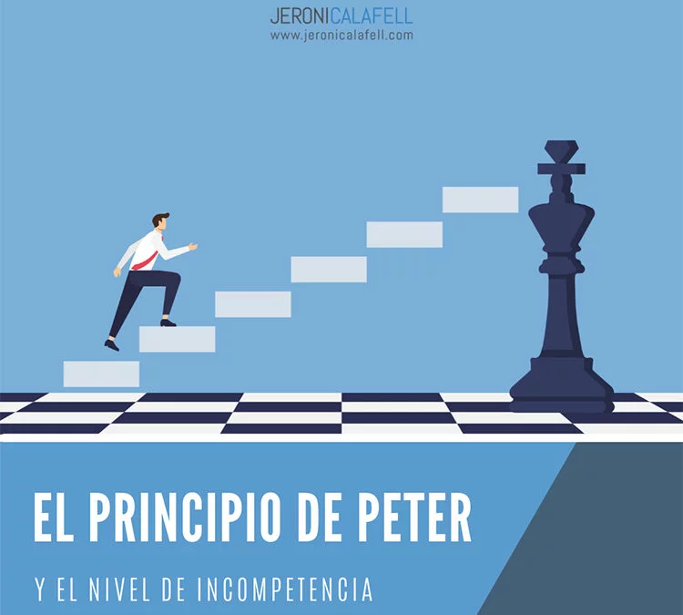

El principio de Peter
Leímos El principio de Peter, una obra que plantea cómo las personas pueden alcanzar un nivel de incompetencia dentro de estructuras jerárquicas. Posteriormente, nos organizamos por equipos para desarrollar una evaluación del contenido. Esta actividad está relacionada con la competencia de pensamiento crítico y autónomo, ya que implica análisis estructurado, interpretación de un enfoque teórico y el ejercicio de autonomía en la creación de instrumentos evaluativos.
Las inteligencias artificiales: LuzIa
Realizamos una exposición sobre LuzIA, una inteligencia artificial de uso cotidiano. Investigamos su funcionamiento, sus beneficios, implicaciones éticas y cómo influye en la vida diaria. Esta actividad se relaciona con la competencia de pensamiento crítico y autónomo, ya que nos permitió analizar de manera reflexiva una tecnología emergente, cuestionar su impacto y construir nuestras propias conclusiones con base en información verificada.
Quema de esquilmos

Analizamos el impacto ambiental de la quema de esquilmos mediante el estudio de datos cualitativos y cuantitativos, proponiendo soluciones y alternativas viables. Esta actividad fortalece la competencia de pensamiento crítico y autónomo, ya que implicó interpretar información, cuestionar prácticas comunes, tomar decisiones informadas y proponer acciones responsables basadas en evidencia. También promovió el análisis de causas y consecuencias en un contexto real, desarrollando así nuestra capacidad para pensar de forma independiente y con criterio.